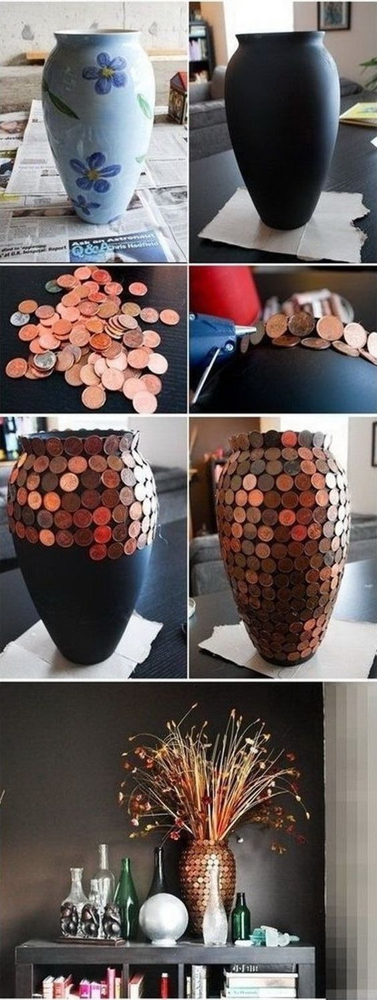
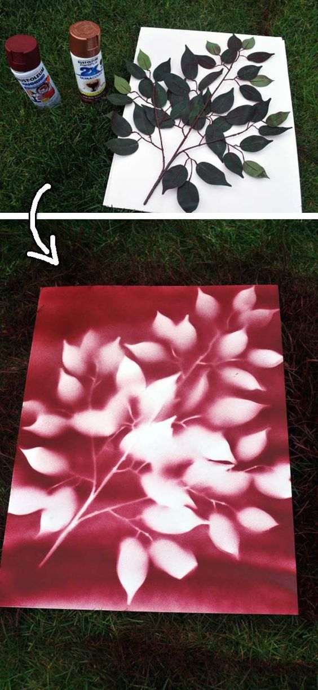
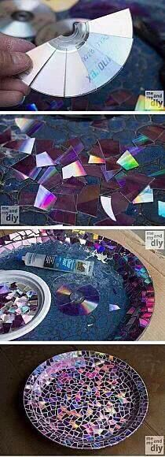

| Images | Instructions |
|---|---|
|  | Have some spare pennies lying around the house and some glue you can't find a use for? Gluing the pennies onto any old vase can make a great decoration for your house. |
|  | By using spraypaint, some sheets of paper, and a branch or whatever object you feel like using, one can quickly create a work of art! |
|  | To most, broken CDs are, at best, completely worthless and harmful in worst case scenarios. The creatively minded individual, however, can find a use for shattered CDs by gluing them into a nifty pattern on a plate, bowl, or any other surface. |